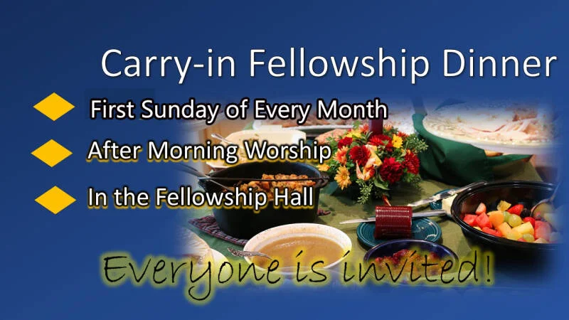
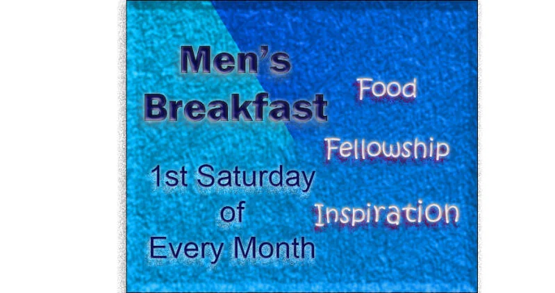
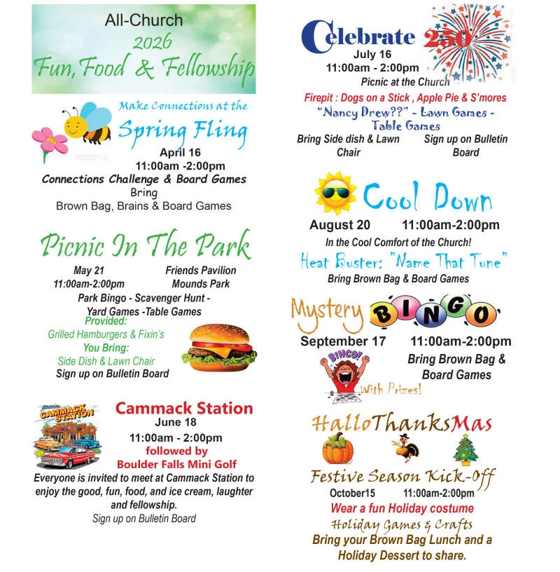

We invite you to experience fresh faith with us here at Chesterfield Community Church of God. Come grow in faith, discover genuine Christian fellowship, and find a welcoming community.
Small Group Bible Study
All ages welcome
Worship Service
Music & Bible message

Kirk Bookout
Interim Pastor
We believe people are created and called by God to grow throughout our lives as individuals and together in faith as God's family. Many opportunities to grow and become more like Jesus are available as we discover God's family and discover God's Word.
We discover God's Word when we engage in Biblical understanding, share with one another in curiosity, and grow in wisdom. We discover God's family when we connect in authentic community.
From energetic children's discipleship to supportive adult fellowship, explore how you and your family can get involved.
Safe, staffed nursery and engaging children's classes offered during Sunday morning worship. Led by Children's Director Susan Blower and Nursery Attendant Amy Greenwalt.
Wednesday evening Bible Study, Thursday Ladies Bible Study, and Sunday morning 9:30 AM groups designed to deepen your grasp of scripture and build lasting friendships.
Serving families across Chesterfield and Madison County with compassionate food assistance, benevolence support, and statewide and global mission partnerships.

First Sunday of every month following morning worship. Bring your favorite dish and enjoy fellowship around the table!

Wholesome food, prayer, devotional insights, and great brotherly conversation. Open to all men and youth.
Quilting, knitting, and needlework ministry crafting blankets and items with prayer for hospitals and shut-ins.

Monthly fellowship gatherings with games, snacks, laughter, and uplifting community for all adults and seniors.
Discover event updates, prayer chains, and volunteer scheduling every week.
123 Linden Lane
Chesterfield, IN 46017
(Corner of Main St & Linden Lane)
9:30 AM: Bible Study (All Ages)
10:30 AM: Worship & Preaching
Nursery & Children's Church Provided